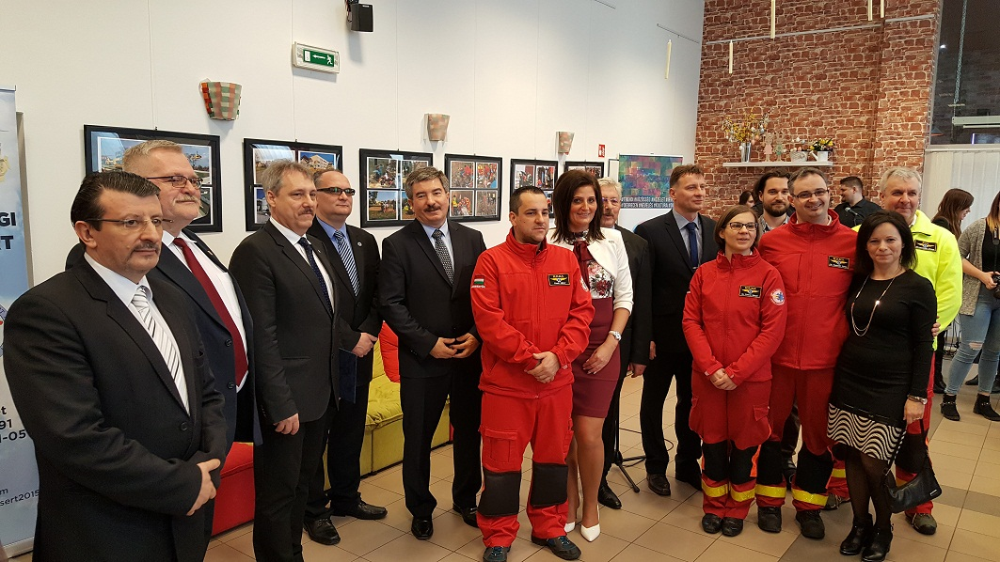
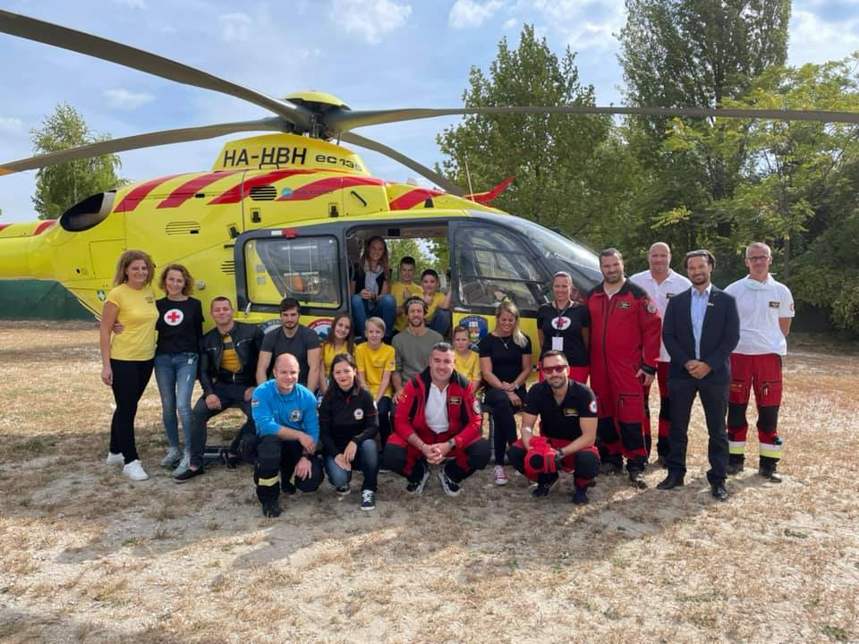
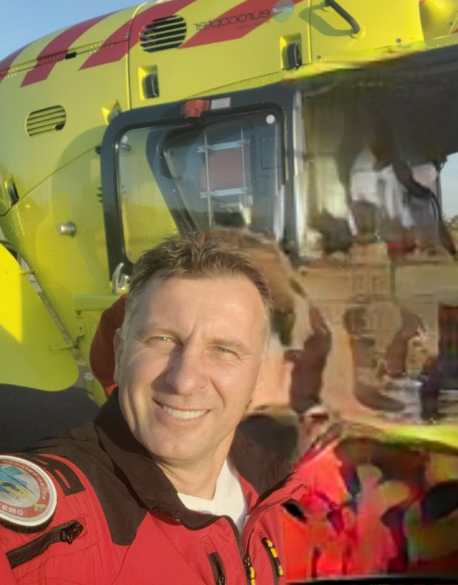
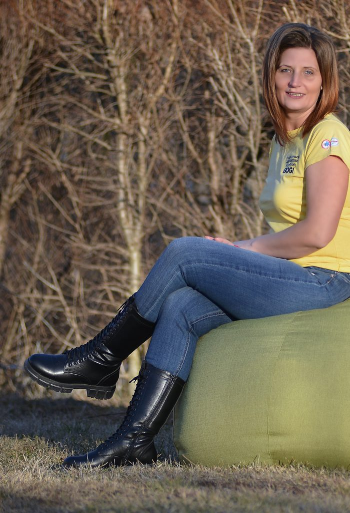
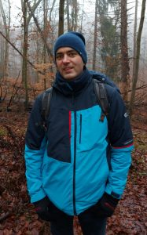
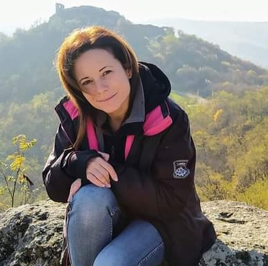
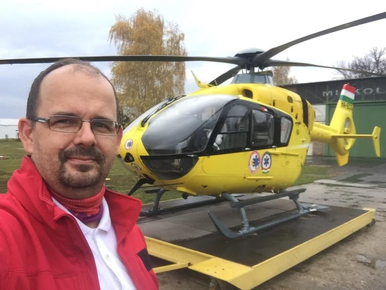

hogy mások is túlélhessék
A Légimentőkről, a légimentésért!
2015 SZEPTEMBERE
Innen indultunk
Tevékenységünket 2015. szeptemberében kezdtük meg. Egy beharangozó rendezvénnyel mutatkoztunk be a Miskolci repülőtéren. A rendezvénnyel egyidőben nyílt meg egy fotókiállítás a Magyarországi Légimentés Történetéből és az akkor 15 éves Miskolci Légimentő Bázis 15 évéből.

KÜLDETÉSÜNK
Tevékenységi körünkbe tartozik
- A légimentésben dolgozó személyzet szakmai ismereteinek bővítése érdekében képzéseken, versenyeken, tudományos rendezvényeken, tanfolyamokon való részvétel elősegítése
- A légimentésben dolgozó személyzet munkakörülményeinek javítása
- A légimentőbázisok tárgyi eszközeinek és infrastruktúrájának javítása
- A magyarországi légimentés megismertetésével oktató, felvilágosító munka folytatása
- A mentési tevékenység támogatása, illetve további lehetőségének megteremtése
- A társadalom egészségügyi ismereteinek és ezzel kapcsolatos gyakorlati készségének fejlesztése
- Kapcsolattartás a hazai és nemzetközi légimentő, illetve egyéb prehospitalis ellátást nyújtó szervezetekkel
- A légimentés tárgyi eszközeinek, emlékeinek felkutatása, gyűjtése, és ezen eszközök, emlékek megőrzése, felújítása, ápolása

VÁNDORKIÁLLÍTÁS
A sárga helikopter története közelről
A kiállítás Borsod-Abaúj-Zemplén vármegye minden járási hivatalának székhelyén megtekinthető volt 2016. augusztusáig, ezzel közelebb hozva a civil társadalom minden korosztálya számára a sárga helikoptert és a mentésben dolgozókat. A kiállítás nem állt meg az alapítvány székhelye szerinti vármegyében, hanem a légimentő bázisok székhelyét bejárva valamennyi érintett vármegyében megtekinthető volt. A kiállítás egy vándorkiállítás keretében bejárta az országot, kiegészülve mind hét légimentőbázis életének fotóival.
2022. évben szerveztük meg első alkalommal az országos véradást, melyet immár minden év szeptember hó utolsó szombati napján szervezünk meg azóta is, hogy felhívjuk a figyelmet a véradás fontosságára.
A mentőhelikopterben rendelkezésre álló két egység 0- vér folyamatossága érdekében kiemelten kezeljük ezen programunkat minden évben, mellyel célunk a véradók számának növelése.
JELENLEGI CÉLUNK
Új ultrahangkészülékek a fedélzeten
Folyamatosan próbáljuk cserélni az eszközöket, jelenlegi cél a mentőhelikopterek fedélzetén lévő ultrahangok cseréje. A Magyar Légimentő Nonprofit Kft. immár 8. éve használ a helyszíni betegellátás során hordozható ultrahang készülékeket. 2016-ban kezdték meg hazánkban elsőként a helyszíni ultrahang diagnosztikát, mely óriási előrelépés volt a betegvizsgálatnál és ellátásban. A technikai fejlődés ugrásszerű az elmúlt években, a készülékeink pedig emellett elhasználódtak, így most támogatókat keresünk a készülékek cseréje céljából.
Az ultrahang vizsgálat a mindennapi hagyományos orvoslás terén hosszú évtizedek óta elterjedt különböző betegségek diagnosztikájában, de a sürgősségi, kiváltképp a kórházon kívüli betegellátásban csak az elmúlt évek során indult a nemzetközi térhódítása. Az ultrahang használata szinte minden betegcsoportban olyan értékes plusz információt ad a helyszíni sürgősségi csapatnak, amik ezt megelőzően elképzelhetetlenek voltak. Segít egy súlyos sérült beteg vizsgálata során a mellkasi sérülés hátterében a légmell azonosításában, a hasüregi vérzés megerősítésében vagy kizárásában, súlyos koponyasérülés során az agynyomás-fokozódás mértékének megítélésében. Emellett az újraélesztések során végzett ultrahangvizsgálat olyan potenciálisan kezelhető okokat segít azonosítani, ami ennek hiányában eddig lehetetlen volt.
Szeretnénk olyan vezeték nélküli, bármely okos eszközzel párosítható, kisméretű, hordozható, kiváló képminőségű új ultrahang készülékekre cserélni a jelenlegi több éves flottát, amelyek tovább javíthatják a betegellátás minőségét.
AMERRE TARTUNK
A Légimentésről röviden
- Folytatjuk a nyílt napok szervezését a hét bázison, hét alkalommal.
- Minden év szeptember utolsó szombati napján országos véradást szervezünk mind a hét légimentő bázison, vagy annak közvetlen környezetében.
- Részt veszünk közösségi rendezvényeken: futóversenyek, sportrendezvények.
- Reményeink szerint részt veszünk több nemzetközi mentőversenyen.
- Nagy projektünk, hogy fokozatosan pótoljuk, lecseréljük a légimentők munkaruházatát – ezt a korábbiakban is támogatóink segítségével valósítottuk meg.
- Továbbfejlesztjük a sürgősségi ellátásban dolgozók munkáját segítő HeliHelp applikációt.
- Folytatjuk a képzési programjainkat annak érdekében, hogy még sikeresebbek lehessenek légimentőink az életmentésben!
AZ ALAPÍTVÁNY CSAPATA
Kik állnak a Légimentésért Alapítvány mögött?

Leskó István
Elnök
2017 óta mentőhelikopter pilóta. Közel 25 éve repülök különböző típusú és rendeltetésű helikopterekkel, de az utóbbi években éreztem igazán azt, hogy mekkora haszna is lehet ennek a fajta repülésnek. A légimentők csapatában nap mint nap megtapasztalhatom, hogy a sok balszerencse, tragédia közepette milyen érzés a munkámmal segíteni a bajba került embereken. Ezt a munkát szeretném támogatni az alapítványunkon keresztül is, hogy még hatékonyabban és még színvonalasabban végezhessük azt.

Nagy Boglárka
Alapító
Nagy Boglárka vagyok és sokan gondolják, hogy légimentő, de nem! Egy civil, aki 2015. évben úgy határozott, hogy megalapítja a Magyarországi Légimentésért Alapítványt. A mindennapokban a közigazgatásban dolgozom, jegyző vagyok. Munkám mellett, szabadidőmben aktívan tevékenykedem a légimentés támogatása, az alapítvány céljainak megvalósítása érdekében, és közreműködöm az egészségtudatos életmód népszerűsítésében is. Az Alapítványt 2015-ben hoztam létre azzal a céllal, hogy a magyarországi légimentés magas színvonalának megőrzése, fejlesztése és működésének támogatása, valamint a lakosság egészségi kultúrájának javítása érdekében végzett karitatív tevékenységemnek keretet adjak. Segítő munkámat önkéntesként végzem, és vallom, hogy „Egynek minden nehéz; soknak semmi sem lehetetlen”.

Dr. Czabajszki Máté
Kuratóriumi tag
Miskolcon dolgozom idegsebész szakorvosként, és 10 éve légimentő orvosként is. Az Alapítvány alapítása óta a kuratórium tagja vagyok, a sportos és egészséges életmódot képviselem, melyet az alapítványon keresztül is sok emberhez próbálunk eljuttatni. Jó emberekkel együtt közös a célunk! Feleségemmel, aki szintén orvos, 2 fiú gyermekünk van, Miskolc mellett élünk.

Üveges Szilvi
Kuratóriumi tag
Civilként az egészségügyben dolgozom, így az alapítvány tevékenysége, céljai közel állnak hozzám. A bajba jutott emberek gyors, magas színvonalon történő mentése, mielőbbi ellátásban való részesítése mindenki ügye, így az enyém is. Az alapítványi munkámmal ezt kívánom segíteni, támogatni, és az emberek figyelmét erre felhívni.
Dr. Arnóczki Tímea
Kuratóriumi tag
Abban a szerencsés helyzetben voltam, hogy bábáskodhattam az Alapítvány létrejöttében, és aktív részem volt a megszületésében, amikor a legjobb barátnőm megálmodta! Azóta, mint egy anya, követem és terelgetem a segítségemmel létrejött szervezetet, és büszke vagyok, hogy felnőtt lett és saját lábára állt, új barátokat szerzett, új helyekre jutott el. A magánéletben jegyzőként a közigazgatásban dolgozom, és két fiú boldog édesanyja vagyok, valahol Abaújban! Nem vagyok sem egészségügyis, sem sportos, csak egy kívülálló lelkes civil, aki szeretne segíteni — hogy mások is túlélhessék!

Felházi István
Kuratóriumi tag
1991 júliusa óta dolgozom az Országos Mentőszolgálatnál mentőápolóként, ebből 2002 és 2015 között jogászként is. 2005-2006-ban tagja voltam annak a munkacsoportnak, aminek feladata a magyarországi légimentés átalakítása és a jelenlegi rendszer kialakítása volt. Első légimentős szolgálatomat 2000. december 23-án töltöttem a Miskolci Légimentőbázison, ahol azóta is dolgozom, jelenleg légimentő paramedikusként. Az Alapítvány munkájában a kezdetek óta részt veszek, mivel Nagy Boglárkával, illetve Dr. Bodnár Judit és Böszörményi Péter légimentős kollégáimmal közösen találtuk ki az Alapítvány létrehozását, melynek igazi és kifáradhatatlan motorja Bogi lett. Lokálpatriótaként Miskolcon élünk, három fiú és egy kislány édesapja vagyok.
Segíts, hogy a légimentők mindig a legjobb eszközökkel indulhassanak útnak.
Támogatom a munkát